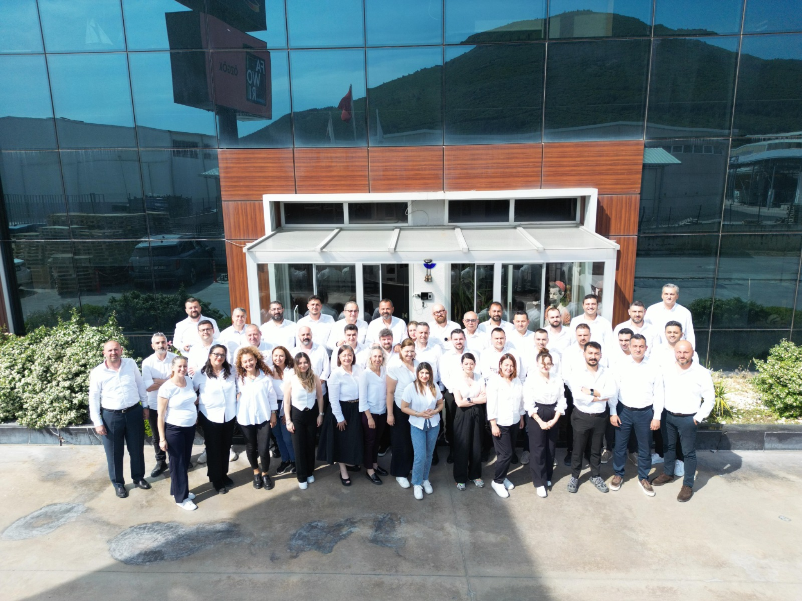

🚚
Gelişmiş Sevkiyat Ağı
İzmir ve Bandırma depo yapısı ile operasyonel sürekliliği destekleyen güçlü lojistik altyapı.
1998’den bu yana güçlü marka iş birlikleri ve sağlam lojistik altyapımız ile projelere değer katıyoruz.
Narlı Yapı, sadece malzeme tedarik eden bir distribütör değil, inşaat projelerinin her aşamasında teknik destek sunan profesyonel bir çözüm ortağıdır.

İzmir ve Bandırma depo yapısı ile operasyonel sürekliliği destekleyen güçlü lojistik altyapı.
Sektörel tecrübe ve piyasa bilgisiyle güven oluşturan kurumsal geçmiş.
Müşteri ihtiyacını doğru anlayan ve uygun ürün yönlendirmesi yapan ekip yapısı.
Uzun vadeli ve sürdürülebilir iş birliklerine zemin hazırlayan finansal sağlamlık.
Yapı sektöründe ihtiyaç duyulan ürün gruplarını güçlü markalar ve güvenilir tedarik anlayışı ile bir araya getirerek müşterilerimize sürdürülebilir çözümler sunmak.
Kurumsal müşteriler ve iş ortakları için tercih edilen, güvenilir ve istikrarlı bir yapı malzemeleri çözüm ortağı olmak.